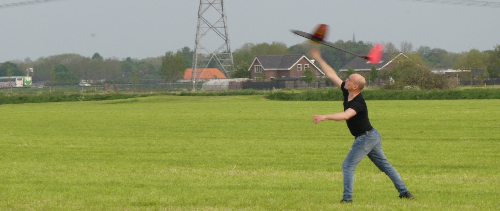
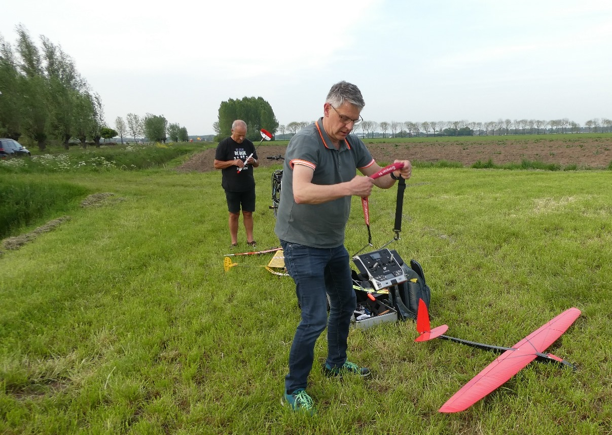
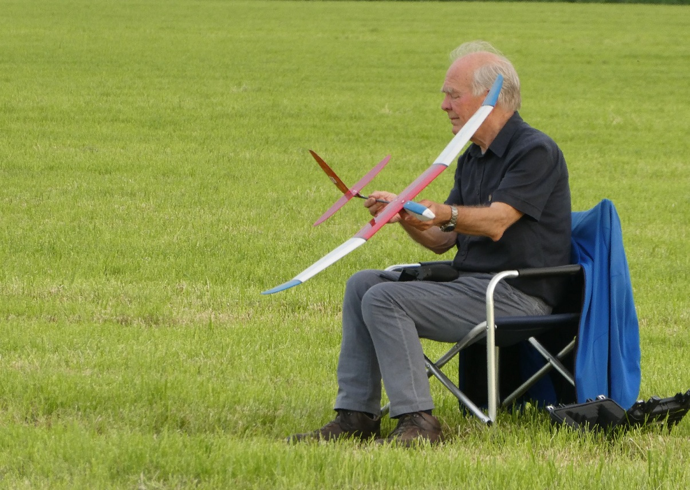
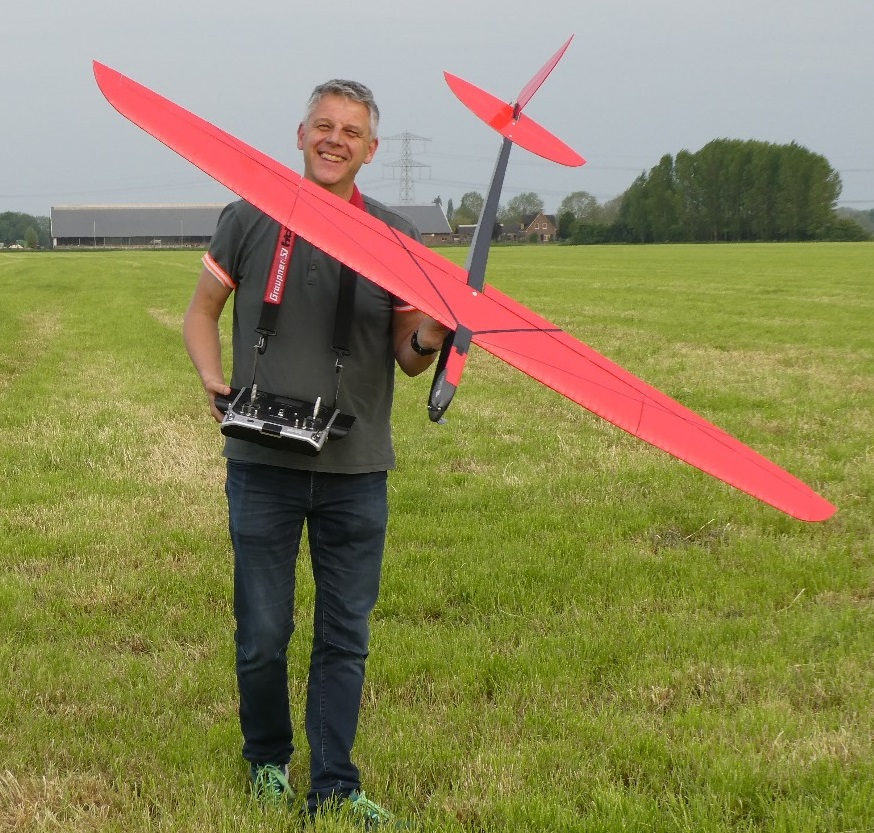
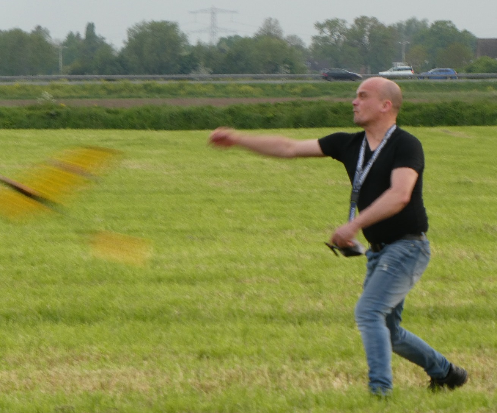
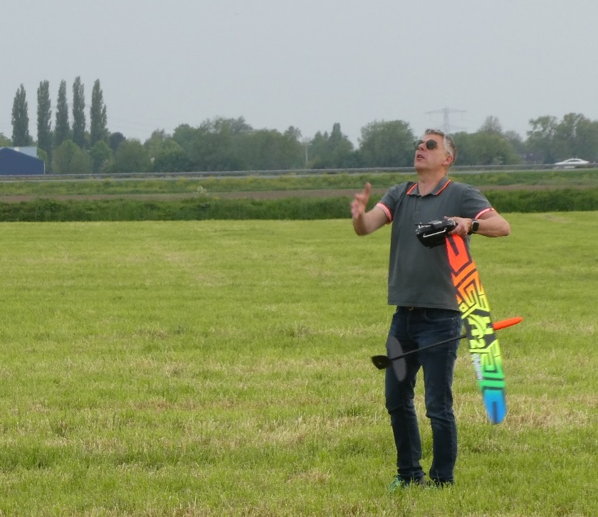
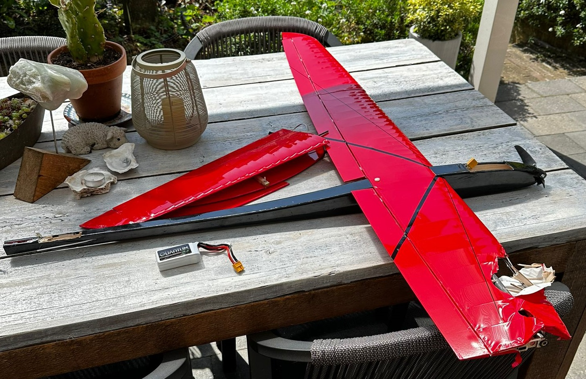
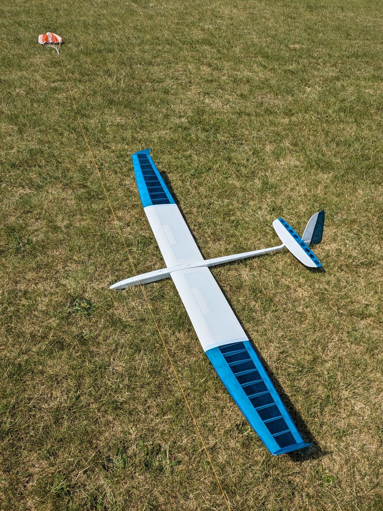

De kreet ‘Geweldige vliegavond’ was populair na een fijne avond modelvliegen bij de boer in Duiven.
Een aantal ALC leden konden de kriebels niet weerstaan en zijn, na groen licht van de boer, naar het vliegveld gevlogen om model te vliegen. Vele modellen werden geprepareerd om airborn te gaan.
Het weer was fantastisch hetzij weinig thermiek maar dat mocht de pret niet drukken. Schade vliegen kan altijd. Vliegtuig in tweeën, vliegtuig hoog in de bomen, vliegtuig zonder servofunctie. Dat hoort er natuurlijk bij. Achteraf bleek de schade nog mee te vallen.
Het geeft altijd weer een motivatieboost aan allen, ook aan diegene die er niet bij waren op woensdag 1 mei. Op naar een mooi vliegseizoen 2024.


” Ik zit in mijn vliegstoel en ben met hulp van Ab Janssen mijn CX mini-RES aan het afstellen voor een strakke lancering aan het korte bungee lijntje. En dat lukte uiteindelijk prima alleen ging bij de landing van de laatste vlucht het kielvlak in tweeen….. “, aldus Ron.




